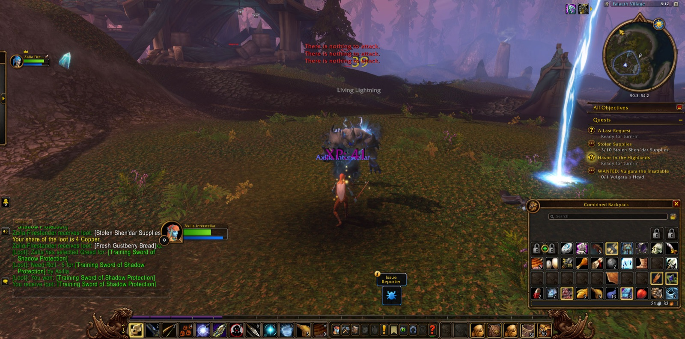
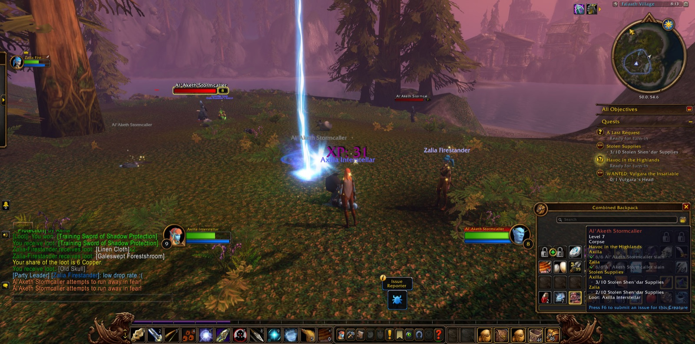

Axilla Interstellar set out again from Shen'dar Village, and before she had gone far she was joined by Winterland, a hunter like herself. He kept the road beside her through the better part of all that followed. Together they went among the Prideclaws and the Galestriders, and a picture was taken in the village as the hunting began. From there the way led up into the Shen'dar Highlands and down to the shore of Windsong Lake and back again. In the Highlands she met Denna, a shaman, and then Gryp, a druid. Each walked with her only a short while, but she held them in courtesy for it. There the Vuldren first fell to her bow, though not before she fell once herself and was brought back by the West Pylon Watchtower.


Northward then she went, to Thendal Grove and into Thendal Cave. In that place the Ursera Scavengers came against her in numbers, and Urs'anah was among them. She turned the hunt to use, and her hand grew skilled in skinning until she had reached the measure asked of her in "Camping 101: Skinning." She passed by Thendal Village and so came down again to Shen'dar Village, where that errand was given up as done.


Then she took up "The Western Watch" and went to look in on the Western Watchtower. There she was given "A Last Request," and she found and read the note that was left. At the West Pylon Watchtower she slew Skypriest Aanders. In that deed she came into new strength and stood at the ninth level, and she marked the moment with a picture. From that place she recovered Raani's Favorite Feather and the Shadowsong Family Signet, small things that would carry weight with those who had lost them.


At Falaath Village the work was long and hard. Stormcallers of the Al'Aketh were there, and Living Lightning, and many of them fell before the end. Winterland parted from her there, and Zalia the shaman took up the road at her side. With her help Commander Cyclas was slain and his head taken, as "Havoc in the Highlands" required. Many pictures were taken in Falaath before the Stolen Shen'dar Supplies were all gathered again. Then Axilla returned to Shen'dar Village and laid down three errands together. Two more were laid upon her, both bound for Valanaar. Zalia went her own way soon after. Lewbowski, another hunter, walked with her only briefly, but long enough to see Vulgara the Insatiable brought down and the bounty claimed.


So at last she went south through the Gustberry Lowlands and Windfield Orchard and came into Valanaar. There she gave the Shadowsong Family Signet into the keeping of Talaanis Shadowsong. Aonda's Written Report went to Valennia Stormfist. New errands were pressed upon her: "Unnerving Silence," "Bugged," "The Grand Skyseer," "Aid For The Refugees," and "The Fate of a Loved One." A single Skyhopper fell at the edge of that place. There Axilla rested, with many roads now opening before her from Valanaar.



